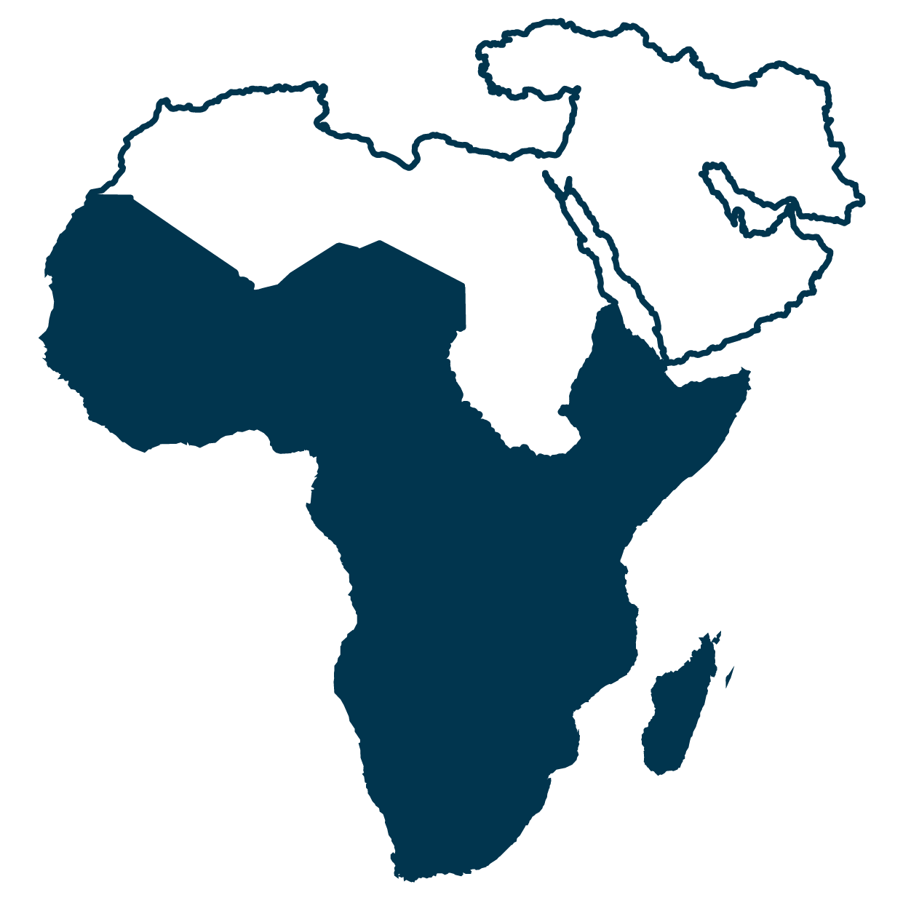
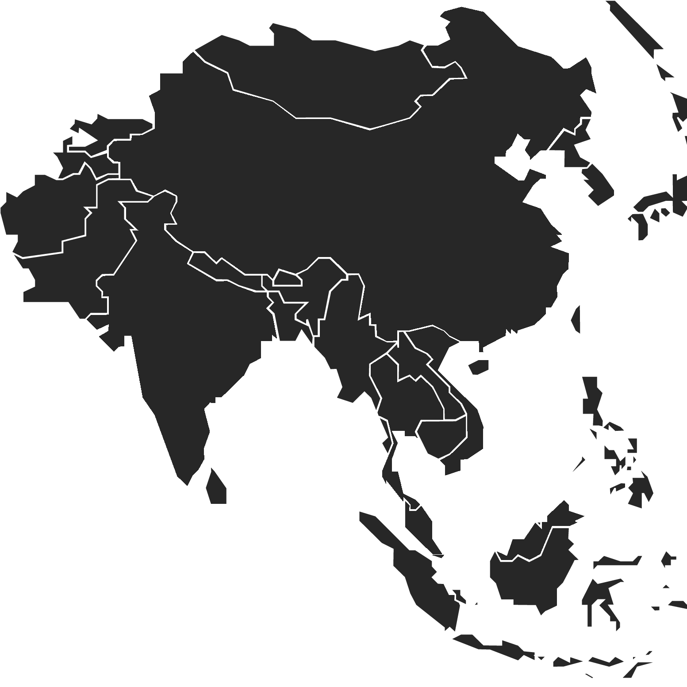
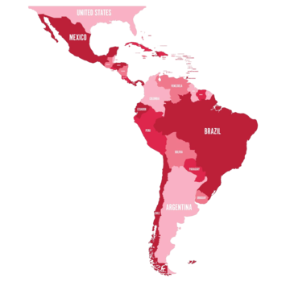
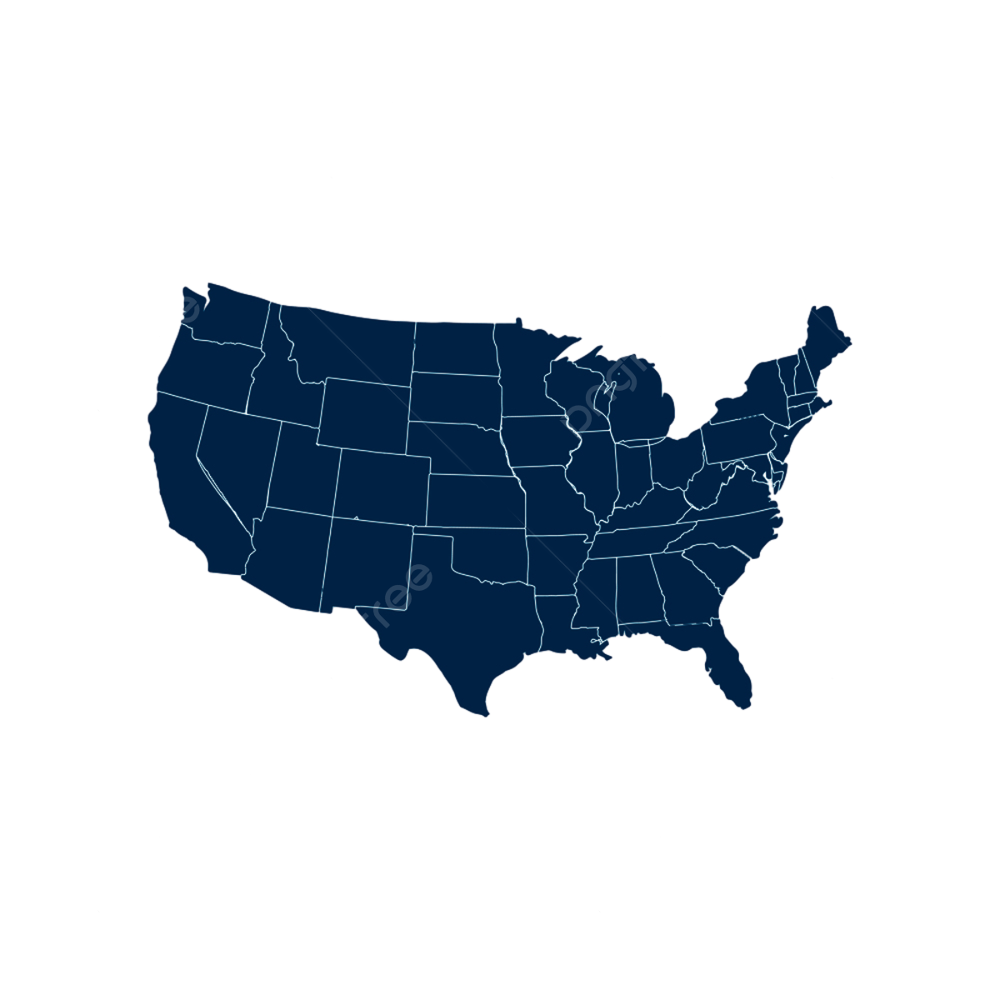
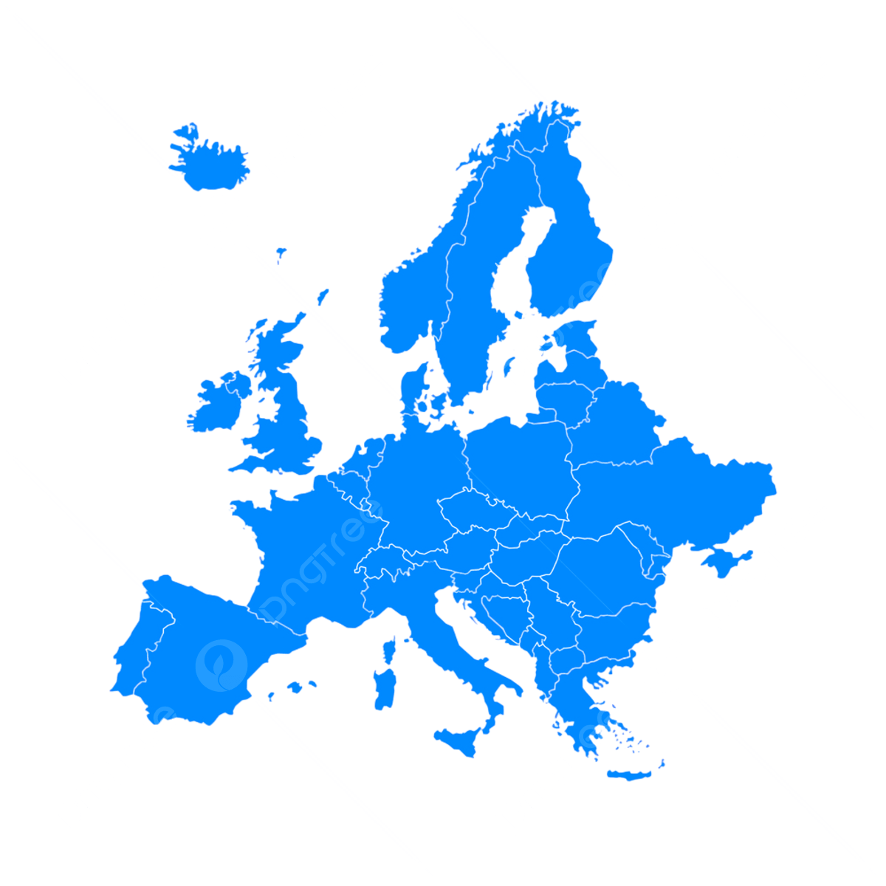

Global Challenges and Solutions for Clean Water and Sanitation Access
 |
|||
|---|---|---|---|
| Region/Country | Global Problem/Inequality | Solution/Progress | Impact Level |
|  Sub-Saharan Africa | 3.5 billion lack safely managed sanitation; 419 million practice open defecation, exacerbating diseases like cholera. Rural areas lag significantly. | USAID’s WARIDI program builds latrines and promotes hygiene in rural Tanzania and Ethiopia, reaching thousands. | Budding 🌱 |
|  South Asia | Poorest fifth of population 13 times less likely to have sanitation access, with open defecation common in rural India. | Swachh Bharat Mission (India) constructed 100 million toilets, reducing open defecation significantly. | Moderate 💧 |
| Middle East (Iraq) | Water scarcity due to climate-induced drought and conflict damages infrastructure, affecting 5.1 million in South Sudan. | UNICEF’s Lologo water treatment plant in South Sudan provides clean water to 100,000 people. | Budding 🌱 |
|  Latin America (Venezuela) | Economic crisis disrupts water access; 80% lack consistent clean water, costing $3 per bottle. | UNICEF’s Wüimpala water treatment plant rehabilitation serves 867,965 people in Zulia State. | Moderate 💧 |
|  USA (Flint, MI) | Lead contamination in water supply disproportionately affects low-income communities, causing health crises. | Pipe replacement programs and federal funding aim to restore safe water access. | Limited ⚠️ |
|  Europe (Germany) | High access (99%) but small rural supplies face lower safety standards than urban systems. | EU-compliant wastewater treatment upgrades enhance nutrient removal and sustainability. | High ✅ |
| Asia (Bangladesh) | 39% have safely managed sanitation; urban slums face sewage overflow and contamination. | World Bank’s Dhaka Sanitation Improvement Project ($330M) improves fecal sludge management. | Moderate 💧 |
| Global | 2.2 billion lack safe drinking water; women and girls spend 250 million hours daily collecting water, limiting education. | World Vision’s WASH programs reach one person every 10 seconds with clean water, supporting 9.4 million households. | Budding 🌱 |
Sources for Table Page
- WHO/UNICEF JMP (2023). Progress on Household Drinking Water, Sanitation and Hygiene 2000–2022: Special Focus on Gender. Available at: washdata.org
- The World Bank (2022–2025). Water Overview and Project Reports. Available at: data.worldbank.org
- USAID Global Waters (2019). Photo Essay on Sanitation Projects. Available at: medium.com/global-waters
- UNICEF (2023). Building Access to Clean Water in Support of Sustainable Development Goal 6. Available at: unicef.org
- World Vision (2025). Global Water Crisis: Facts, FAQs, and How to Help. Available at: worldvision.org
Data paraphrased to avoid plagiarism, used under Creative Commons licenses where applicable. Images sourced from iStockPhoto, licensed under royalty-free terms.